GLUESIGHT / 用户操作手册
GlueSight 图文使用教程
从第一次运行到配方发布 检测与复盘
本教程面向操作员、调试人员和首次使用者。以 ROBOT-DEMO 四点飞拍为例，带你完成设备配置、标定、示教、验证、检测和历史复盘。截图来自真实桌面软件和本机 Robot 联调台。
2026 年 10 月 9 日版 | 示例 ROBOT-DEMO · 四点飞拍 · 产品代码 101
点击截图可放大。左侧目录可跳转；打印时自动生成 A4 横向手册。
阅读路线
按你现在要做的事开始
已有示例先读第 1 节。首次建站按第 2 至 13 节操作。日常运行与复盘看第 14 至 18 节。日常检查与环境维护看最后两节。
- 01先跑通一个已配置的示例3
- 02设置型号来源和图像测量4
- 03配置相机并确认实际状态5
- 04连接 PLC 并核对握手点位6
- 05完成飞拍工位标定7
- 06建立候选配方8
- 07规划胶路和拍照位置9
- 08设置判定规则并检查飞拍条件10
- 09为每一帧取样并选择定位模板11
- 10试测通过后保存每一帧12
- 11布置工件总览13
- 12准备良品与缺陷样本14
- 13验证一致后发布生产版本15
- 14运行 Robot 联调并正常停止16
- 15在在线检测中读懂结果17
- 16查历史并定位到原图18
- 17用候选规则或原图复测19
- 18按信号和异常码排查20
- 19日常检查与配置变更21
- 20模拟环境的启动与升级22
开始使用 / 01
1 先跑通一个已配置的示例
已有演示环境时，先完成一次正常件检测，再学习后面的从零配置步骤。左侧“操作流程”可以回到所有主要入口。
- 1启动 GlueSight。使用本仓库模拟环境时，双击 scripts/robot-plc-demo/启动联调.cmd；第一次还没有演示程序时，按第 21 节构建。
- 2打开本机联调台 http://127.0.0.1:8766/。确认 PLC 通讯正常、触发桥在线、视觉就绪。
- 3选择“正常件”，点击“运行一件”；回到 GlueSight 的“在线检测”，查看工件 SN、4/4 帧和 OK。
- 4前往“历史记录”，确认同一 SN 已保存。若尚未建站，请依次完成第 2 至 13 节。
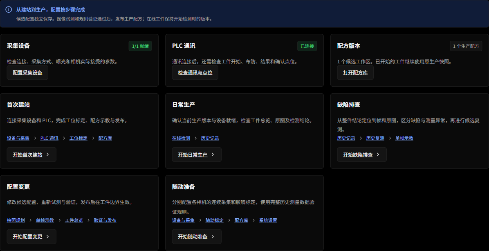
首次建站 / 02
2 设置型号来源和图像测量
进入“系统设置”。两个设置分区分别保存，修改后要点击对应分区的“保存”。
- 1在“检测节拍”中，将型号来源设为“PLC 下发产品代码”。PLC 的产品代码必须与配方一致；人工调试也可选择“人工选择配方”。
- 2在“测量与帧录制”中，将飞拍配方设为“lyFlow 流程（模板定位 + 逐点卡尺）”，填写本机 lyflow_core.dll 的实际位置。
- 3学习和排查时，将“帧录制”设为“全部”，并设置保留件数和空间上限；生产时按需要选择“只留 NG / ERR 件”。
- 4点击保存，确认引擎显示“LyFlow · 就绪”。保存节拍设置后，新的设置从下一个工件开始生效。
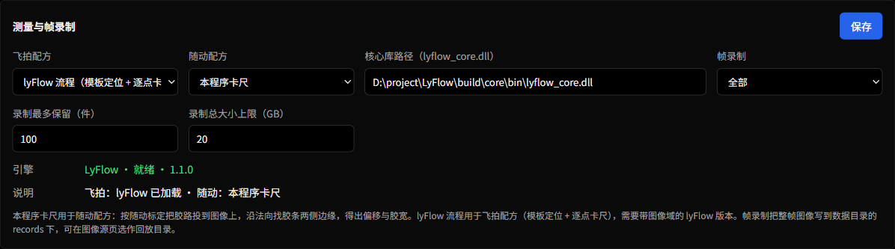
首次建站 / 03
3 配置相机并确认实际状态
进入“设备与采集”，先选中要配置的相机。示例只需要 cam1。
- 1学习本教程时，图像源选“模拟相机”，采集方式选“触发（飞拍）”。现场相机选择“海康 MVS”并绑定正确设备；离线数据选择“回放目录”。
- 2填写相机名称。现场相机还需调整曝光、增益和触发参数，然后点击相机参数区的“保存并应用”。
- 3查看顶部“已连接”和“实际参数状态”。存在“未接受参数”时，按具体提示调整后重新保存。
- 4回放模式先选择有效目录，再用“下一张”查看原图。完成配置后，通过页面下方进入飞拍工位标定。
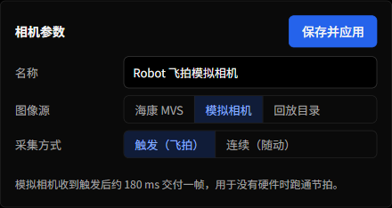
首次建站 / 04
4 连接 PLC 并核对握手点位
进入“PLC 通讯”。本例通过独立的 Modbus TCP 服务进行真实报文交换。
- 1协议选“Modbus TCP”，主机填 127.0.0.1，端口 1502，站号 1；轮询 50 ms，通信超时 1000 ms。
- 2保存配置并连接，确认状态为“已连接”。现场连接时，用设备实际 IP、端口、站号和点位表替换示例值。
- 3核对工件开始 C10、运动结束 C11、结果确认 C12、视觉就绪 C20、已布防 C21、检测中 C22 和结果有效 C23。
- 4核对产品代码 HR102、拍照数 HR103、结果码 HR110 和异常码 HR111。工件及结果 SN 使用两个寄存器，需与 PLC 字序一致。
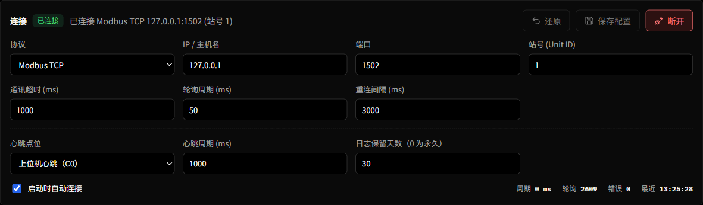
首次建站 / 05
5 完成飞拍工位标定
标定将像素换算为毫米。在“飞拍工位标定”中，先获得清晰的标定板原图，再执行标定。
- 1选择 cam1，点击“取新样本”，或用“导入离线原图”导入该工位拍摄的棋盘格图像。
- 2填写棋盘格内角点数量和实际格长。本教程的合成板为 9 × 6 个内角点，格长 3.2 mm。
- 3点击标定按钮，检查成功状态、像素当量和误差。示例合成板约为 0.08 mm/px；现场应以实际板和相机求得的值为准。
- 4保持相机、镜头和工位位置稳定。更改成像位置、分辨率或镜头后，应重新标定并重新验证相关示教。
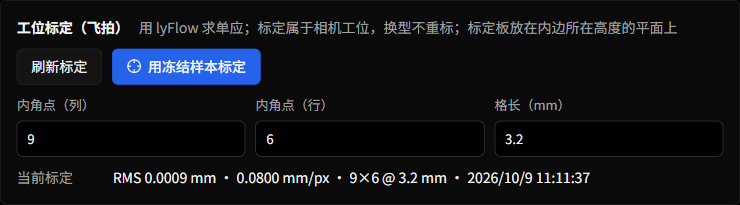
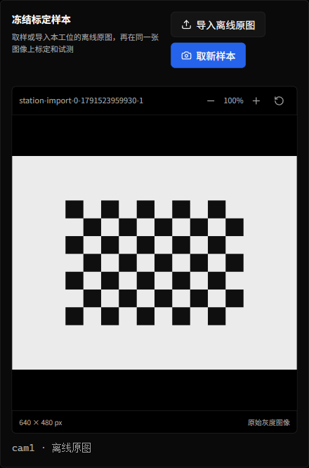
建立配方 / 06
6 建立候选配方
在“配方库”点击“新建飞拍”。候选是编辑和试验用版本，生产版本才会被在线检测使用。
- 1填写唯一的配方编号、便于辨认的名称和产品代码。编号使用字母、数字、下划线或短横线，最多 32 位。
- 2本教程使用 ROBOT-DEMO、产品代码 101。如果库中已经存在该示例，请直接选择“配置候选”；创建自己的配方时换用未使用的编号和代码。
- 3点击“创建候选”，进入胶路与拍照规划。需要调整已有产品时，在配方库打开该产品的“配置候选”。
- 4随时核对顶部的“候选 v…”和“生产 v…”。保存候选不会立即更改正在生产的版本。
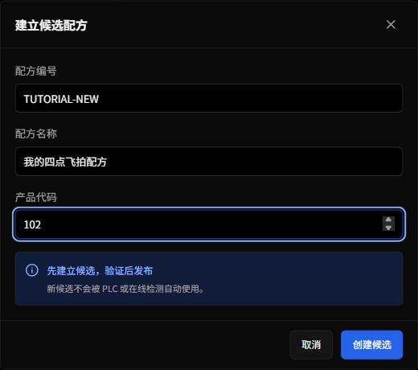
建立配方 / 07
7 规划胶路和拍照位置
进入“胶路与拍照规划”。这里的拍照点是真实物理坐标，会影响图像覆盖和测量点归属。
- 1示例胶路选圆角矩形：宽 380 mm、高 200 mm、圆角半径 24 mm。其他形状可使用折线或导入几何。
- 2选择 cam1，触发方式选“飞拍（位置比较触发）”，视野宽 216 mm、高 145 mm。
- 3按运动顺序输入四个拍照点中心：95,50；285,50；285,150；95,150。每行一个 x,y。
- 4查看胶路预览和“搜索窗口覆盖”，确认覆盖完整后保存候选配置，再进入单帧示教。
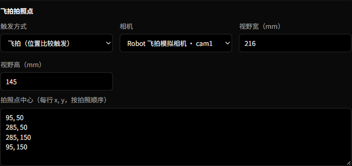
建立配方 / 08
8 设置判定规则并检查飞拍条件
判定规则决定哪些测量结果会成为 OK、NG 或允许的局部超差。先理解每项含义，再填写工艺要求。
- 1设置测量点间距、中值滤波窗口和允许断胶长度。示例分别为 0.5 mm、5 点和 0.5 mm。
- 2“位置”表示内边到胶中线的距离。连续超出公差带超过允许长度会判 NG，超过绝对上下限会直接判 NG。
- 3直线段与拐角可以使用不同限值；需要检测胶宽时，启用相应胶宽判定并填入工艺限值。
- 4检查飞拍可行性中的运动模糊、相邻触发间隔和视野重叠。输入实际速度、曝光及帧率，不要只看界面默认值。
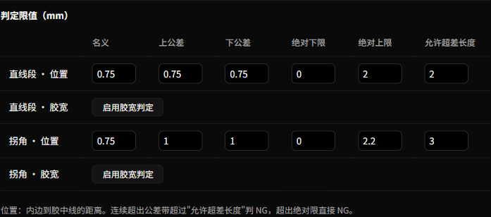
示教与验证 / 09
9 为每一帧取样并选择定位模板
进入“单帧示教”，从 k1 开始。每一帧独立绑定原图与参数，完成后再切换下一帧。
- 1将工件和相机置于当前拍照点，点击“取新样本”；也可导入该点的完整离线原图。
- 2在冻结图像中拖出定位模板。选择稳定的安装孔、内边或结构特征，避开可能随产品缺陷变化的胶条。
- 3核对像素当量、搜索余量、最低灰度对比和最低定位分数。示例使用 0.08 mm/px、4 mm、25 和 0.61。
- 4用缩放和“测量叠加”检查名义测量点位置；需要时调整平移和角度，然后试测。
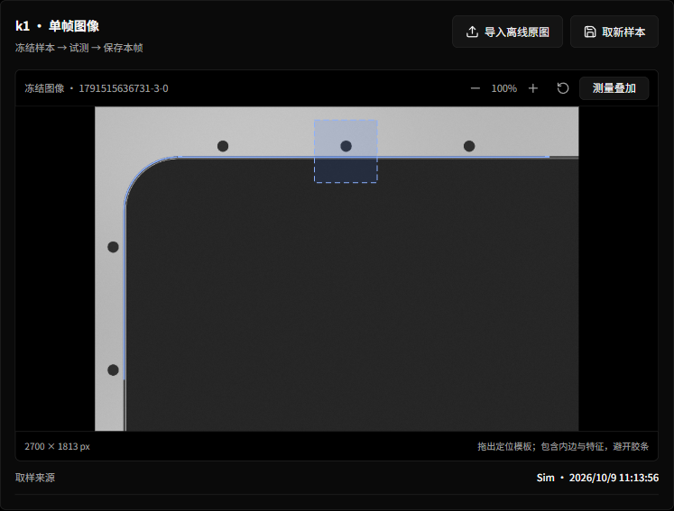
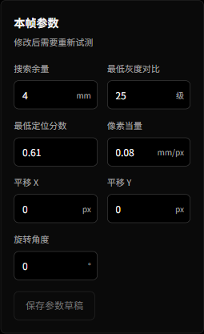
示教与验证 / 10
10 试测通过后保存每一帧
“保存参数草稿”与“保存本帧示教”含义不同。发布前需要完成有效的原图试测和示教保存。
- 1点击“试测当前帧”，查看定位分数、测量覆盖和结果说明。先解决定位或测量问题，再保存。
- 2试测通过后点击“保存本帧示教”，或“保存并示教下一帧”。重复完成 k1 到 k4。
- 3确认页面显示“已保存 4 / 4 帧”。任何一帧换图或改参数后，都要重新试测并保存。
- 4使用历史帧或新原图尝试调整后，如果需要撤回，可使用“恢复原始示教”；恢复后按提示重新试测。
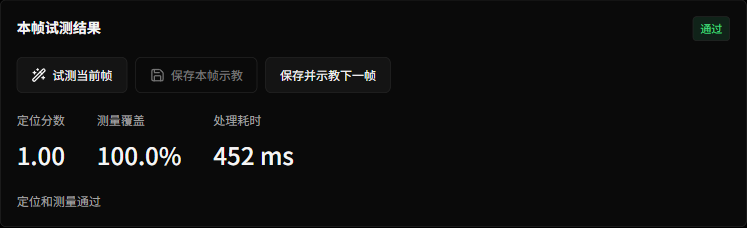
示教与验证 / 11
11 布置工件总览
总览用于把各拍照点放到便于理解的工件示意位置，帮助生产时定位缺陷。
- 1进入“工件总览”，点击各帧框，核对右侧绑定原图是否正确。
- 2可导入工件总览图作为背景，或先点击“自动布置”。
- 3拖动帧框，或用方向键微调显示位置，最后点击“保存总览”。
- 4看到“总览已保存”后进入“验证与发布”。若要改变机器人实际拍照位置，应返回胶路与拍照规划。
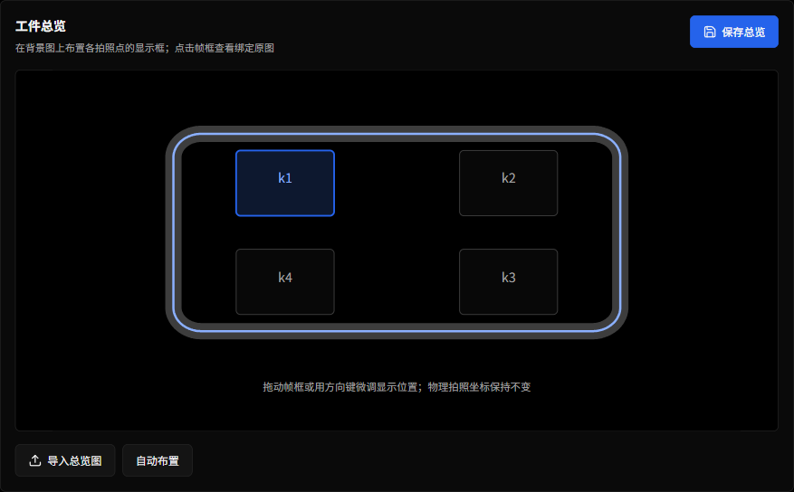
示教与验证 / 12
12 准备良品与缺陷样本
验证不能只看一张看起来正常的图。至少选择一件合格样本和一件缺陷样本，并由使用者确认期望结论。
- 1在“验证与发布”点击“导入原图样本组”，填写样本名称和人工期望结论。
- 2按 k1 到 k4，为同一件工件的每个拍照点选择一张原图，然后保存样本组。
- 3每导入一组后即可勾选并确认期望。继续导入或刷新同一候选，不会取消已有选择；切换候选时会加载目标候选自己的选择。
- 4也可选用胶路兼容的历史测量。原图样本组会重跑图像测量，历史测量样本主要用于规则验证。
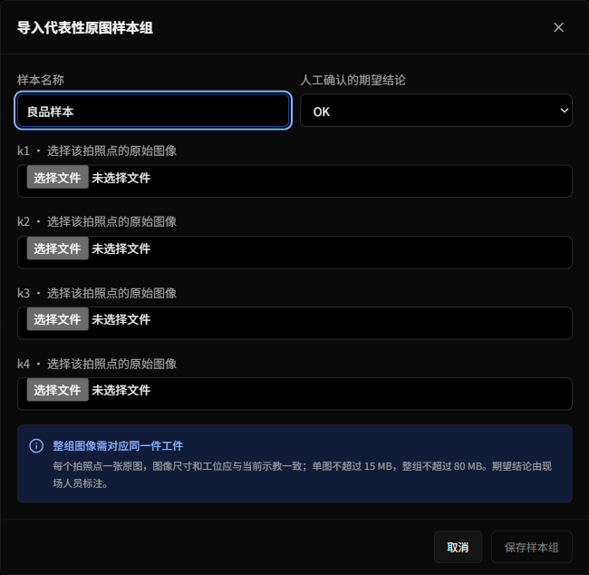
示教与验证 / 13
13 验证一致后发布生产版本
验证检查设备、覆盖、示教、总览与代表性样本。只有当前候选、当前选择和期望对应的验证结果才可发布。
- 1勾选代表性样本，核对人工期望，然后点击“运行规则与图像验证”。
- 2查看发布前检查和每个样本的候选结论。需要显示通过，并与人工期望一致；不一致时返回对应步骤排查。
- 3点击“发布生产配方”，在确认窗口核对配方编号和版本，再确认发布。
- 4发布在工件边界生效。正在检测的工件继续使用旧快照；下一工件使用新版本，可在在线检测页核对。
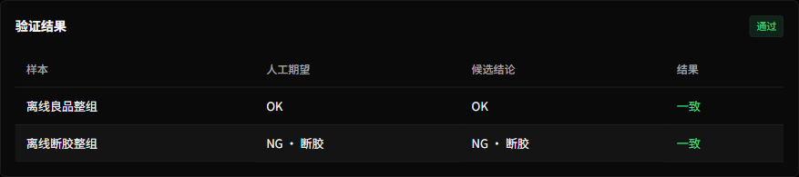
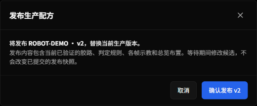
检测与复盘 / 14
14 运行 Robot 联调并正常停止
Robot 联调台模拟运动、拍照触发和 PLC 握手。它与 GlueSight 使用相同产品代码和拍照点数量。
- 1确认 PLC 通讯正常、触发桥在线、视觉就绪，且 armed、busy、done 已释放。未就绪时先按界面提示处理原因。
- 2选择工况后点击“运行一件”，观察移动、触发、等待结果和确认的顺序。
- 3需要重复运行时点击“连续运行”。结束时点击“本件后停止”；看到“停止请求已收到”后等待当前工件完成，不必重复点击。
- 4若服务离线，先恢复服务；若存在未释放的故障握手，停止运行并排查原因，再按“故障复位”。
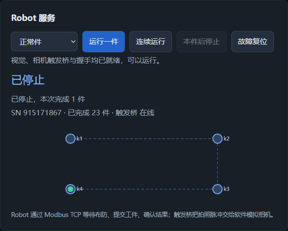
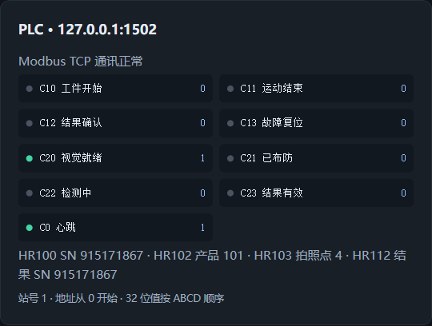
检测与复盘 / 15
15 在在线检测中读懂结果
“在线检测”以整件结果为中心，保留当件配方快照。先确认工件和版本，再查看帧与缺陷。
- 1核对顶部配方编号、版本、工件 SN 和流程状态。正常件结束后应回到空闲。
- 2观察拍照帧数量和每帧状态。本例完整检测应收到 4/4 帧，不能只凭 PLC 已连接判断检测完成。
- 3切换“整件”或“选中帧”，点击 k1 到 k4 查看原图；结合测量曲线、分段结果和缺陷位置判断原因。
- 4OK 表示按当前规则通过；NG 表示测量得到缺陷；ERR 表示未能完成有效检测，需要检查设备、图像或时序。
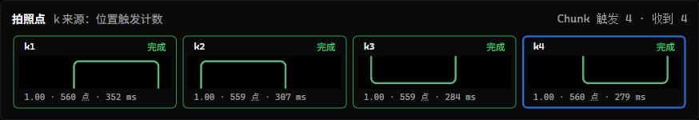
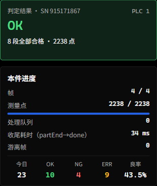
检测与复盘 / 16
16 查历史并定位到原图
历史记录用于追溯工件、比较缺陷和导出数据。开始排查时，优先记录 SN、配方版本、结果码和原因。
- 1进入“历史记录”，按时间、结果和配方缩小范围。演示中主动注入了异常，所以列表里有 NG 和 ERR 是预期现象。
- 2点击需要检查的工件，进入详情；选择对应帧，查看原图、叠加、曲线和检测原因。
- 3断胶可能跨越两个拍照点，要结合整件展开结果检查合并长度，不要只看单帧。
- 4需要分享或分析时，按页面提供的“导出 CSV”导出记录。找不到原图时，检查是否开启录制以及保留策略。
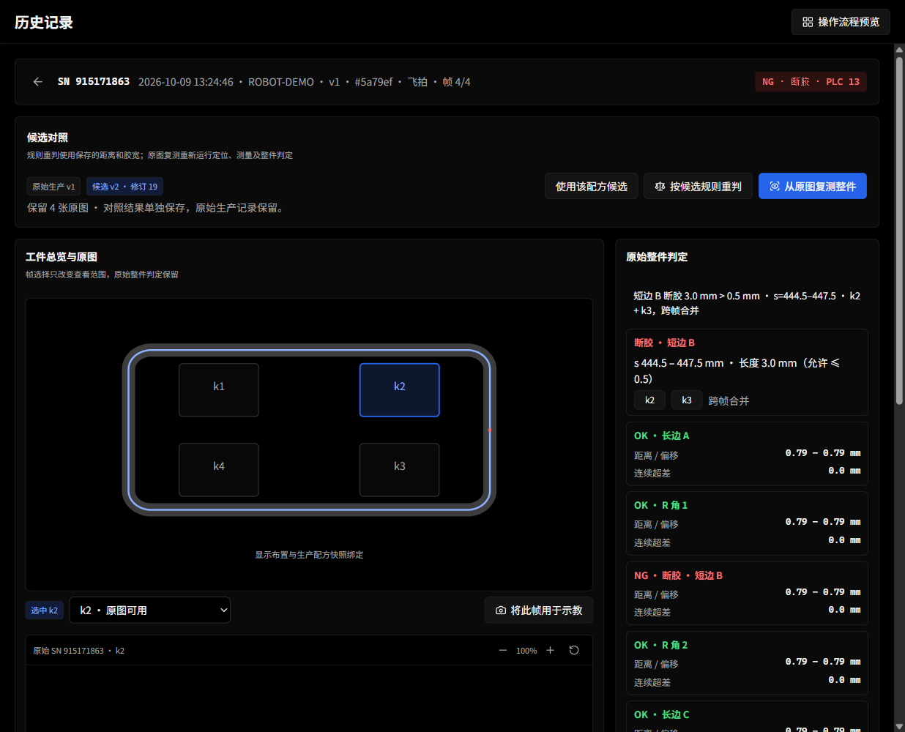
检测与复盘 / 17
17 用候选规则或原图复测
复测用于评估调整的影响。候选验证和复测不会覆盖原始生产历史。
- 1在历史记录中打开一件工件，在“候选对照”区域点击“使用该配方候选”。“历史复测”导航会引导你先选择历史工件。
- 2只想比较判定规则时，使用历史测量数据进行规则复测。要评估定位或测量参数，需要完整原图复测。
- 3运行后对照原始结论和候选结论，并逐帧检查原图与缺陷差异。缺少原图或几何不兼容时，先补足条件。
- 4必要时将历史帧用于候选示教；更新示教后重新试测、验证并发布，不能跳过发布前检查。
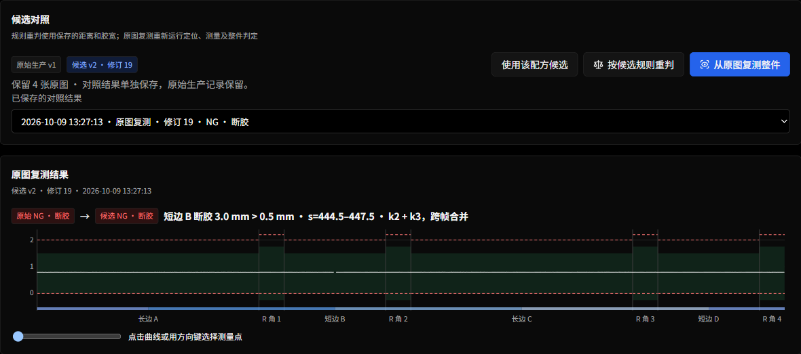
异常处理 / 18
18 按信号和异常码排查
先判断问题发生在设备连接、拍照采集、图像处理还是结果确认，再做对应操作。
- 1PLC 未连接：检查服务或设备是否启动、协议参数是否一致；查看“通讯日志”中的连接与错误记录。
- 2已连接但不能启动：检查视觉就绪、相机、生产配方、触发桥及 armed/busy/done 是否释放。
- 3收到 ERR：结合异常码定位。91 为缺帧，92 为定位失败，94 为拍照数不符，95 为产品代码未匹配配方。
- 4结果有效一直不释放：检查 PLC 是否发送结果确认，确认后再释放工件开始。避免连续重复发送开始信号。
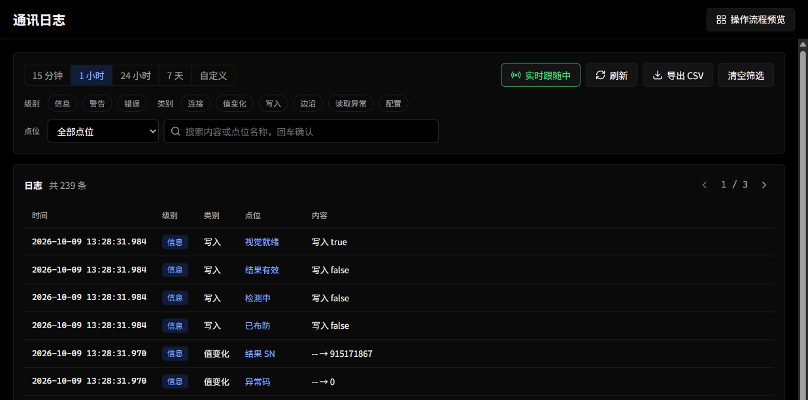
日常使用 / 19
19 日常检查与配置变更
开工前检查版本和设备，结束后保留必要证据。修改配置时沿候选、验证、发布的路径进行。
| 看到的状态 | 接下来做什么 |
|---|---|
| 候选配置尚未保存 | 先保存候选，再取样、验证或发布 |
| 参数待试测 或 试测已过期 | 在当前图像和参数上重新试测 |
| 样本选用或期望已改变 | 重新运行规则与图像验证 |
| 等待工件边界 | 等当前件完成，再核对下一件版本 |
| 已请求停止 | 等待本件收尾，不再重复点击 |
- 1开工前：确认相机与 PLC 就绪、引擎可用、产品代码正确、生产版本正确；先运行一件已知良品。
- 2生产中：关注 ERR、缺帧、定位分数和通讯异常；检查保存原图是否符合复盘需要。
- 3变更时：修改候选，重新试测受影响的帧、验证代表性样本，确认后发布；下一件检查实际使用版本。
- 4结束时：请求本件后停止，待握手释放再关闭联调服务。备份应用数据目录及需要保留的原图、CSV 和配方资料。
维护附录 / 20
20 模拟环境的启动与升级
本节面向维护人员。以下命令在仓库根目录执行；操作员日常使用可直接打开已经部署的桌面程序。
| 命令 | 作用 |
|---|---|
| pnpm sim:build | 首次构建，或软件升级后重新构建并启动专用桌面联调 |
| pnpm sim:start | 使用已有构建启动，复用配方与历史 |
| pnpm sim:stop | 等待当前件完成，再关闭登记的模拟进程 |
| pnpm sim:test | 不依赖桌面和 DLL 的隔离协议回归 |
| pnpm sim:verify | 在已就绪的联调环境依次运行五种工况 |
| pnpm sim:services | 只启动 Robot、PLC 与联调台，不运行桌面图像检测 |
- 1首次需要 Python 3.11+、Node 22+、PowerShell 7、pnpm，以及桌面构建所需的 Rust/MSVC/WebView2 和兼容 lyFlow DLL；先安装项目依赖。
- 2修改端口、配方或时序时，编辑 scripts/robot-plc-demo/demo.config.json。PLC 参数改变后，在 GlueSight 中同步修改。
- 3升级顺序：停止模拟服务 → 运行 sim:test → sim:build → 完成就绪检查 → sim:verify。失败时根据日志排查后再使用。